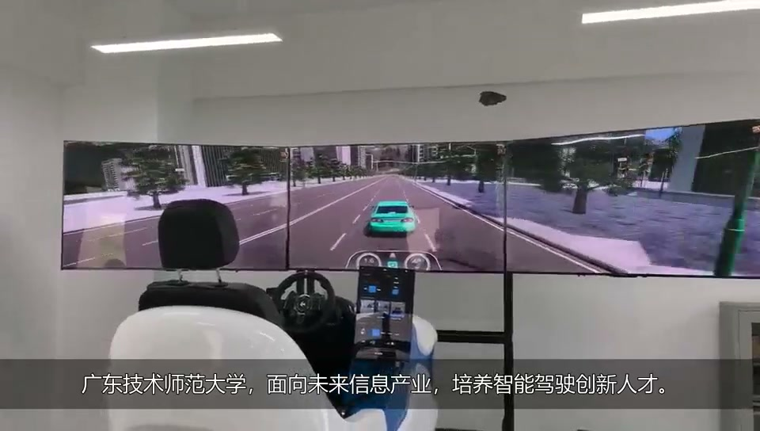
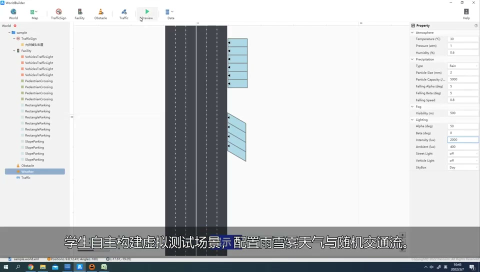

CAMERA / 摄像头
位置、姿态与视场
在平台中核对相机安装位置、朝向和视场角，观察前方目标是否进入画面。视觉检测需要另接算法，不能把仿真图像直接称为 AI 检测结果。
基于 PanoSim 的智能驾驶虚拟仿真实验。
从场景构建、多传感器配置，到算法对比与驾驶员在环实践。

项目实景 · 驾驶模拟器▶从设备实景了解实验环境，再跟随教学视频梳理完整任务。
实验设备、虚拟场景、传感器配置和人在环教学的整体展示。
视频及页面实景图片均来自项目提供的两段素材。视频中的教学助手、自动评价等内容为视频所述设计，不表示本网页已实现对应服务。
把每一步操作与需要提交的证据对应起来。

用简化模型预演参数趋势，再在 PanoSim 中配置同类工况、比较实际仿真输出。
| 网页预演项 | PanoSim 中的核对位置 | 实验记录要求 |
|---|---|---|
| 场景 / 主车速度 / 初始车距 | 场景与实验配置、主车和目标初始状态 | 保存场景标识、位置、速度和目标运动 |
| 道路附着 μ | 道路、轮胎及车辆模型的对应配置 | 核对单位与生效范围；网页 μ 仅约束主车 |
| TTC 阈值 | 所接入 AEB 算法的参数或代码 | 记录算法版本；不是所有控制器都使用 TTC |
| 总延迟 | 感知、通信和执行链路的实测或注入延迟 | 按时间戳核验，不视为平台统一开关 |
结合项目视频中的 SensorBuilder 操作，先检查安装与覆盖，再分析感知对控制的影响。
在平台中核对相机安装位置、朝向和视场角，观察前方目标是否进入画面。视觉检测需要另接算法，不能把仿真图像直接称为 AI 检测结果。
核对雷达覆盖区域、目标距离与相对速度；与真值比较时保持坐标、单位和时间戳一致。网页使用理想状态，仅演示总延迟影响。
在平台中检查所选雷达模型的扫描与输出配置，比较遮挡前后的结果。具体点云或目标级输出取决于实际模型与授权。
固定当前场景、车速、车距、附着和延迟，只改变 TTC 阈值。
| TTC 阈值 | 制动开始 | 最小净车距 | 最大减速度 | 结果 |
|---|---|---|---|---|
| 点击“运行三组对照”，比较 1.0、2.0、3.0 秒阈值。 | ||||
同一初始条件下提前触发通常可增加制动余量；本模型采用固定减速度，不能据此比较真实舒适性或 AI 模型优劣。
项目视频展示了驾驶模拟器上的人在环操作。平台实践中应保存提示时刻、有效人工输入及车辆响应，再比较接管前后的轨迹和加速度。
右侧先练习“看见提示 → 作出响应”：开始后等待 2–5 秒，看到提示再点击接管或按空格键。
网页仅测页面反应时间，未连接方向盘、踏板或运动平台，不等同于车辆控制权切换。
最近 50 次实验存于本机浏览器。下载记录后，可用于撰写实验报告。
| 实验时间 | 场景 | 速度 | 附着 μ | TTC / 延迟 | 最小车距 | 结果 |
|---|
依据项目教学设计整理。网页承担预演与导学；建模、算法接入和设备实践在 PanoSim 授权环境完成。
采用时间步长 0.02 s 的一维纵向模型。主车初速由 km/h 除以 3.6 换算为 m/s；车距为保险杠之间的净间距。TTC = 净车距 / 正的接近速度。接近速度不大于零时显示“∞”。
当 TTC 首次小于等于设定阈值时锁定触发事件，等待总延迟后开始制动；减速度为 min(6, μ × 9.81) m/s²，停车后不倒退。前车减速工况使用固定 3 m/s² 减速度，其运动不随道路附着参数变化。这里的 μ 仅约束主车。
仿真最长 20 s；净车距达到零视为碰撞并终止。正常结束时显示已模拟时段内的最小车距，不代表后续所有时间均安全。模型未包含横向运动、实际视觉检测、制动建立过程、轮胎非线性和路面坡度。
30 项指导任务来自教学设计；16 学时表示原课程计划，并非本示意网站已实现全部教学能力。当前没有账号、云端成绩或共享平台接口。清除浏览器存储会丢失本地记录。
项目实录与操作画面：项目提供的两段视频。教学任务：项目申报书。PanoSim 工具链和平台能力说明参考厂商资料；不据此推定校内已配置所有功能。
资料核对：2026-10-20。本网站为项目教学配套页面，非 PanoSim 官方网站。